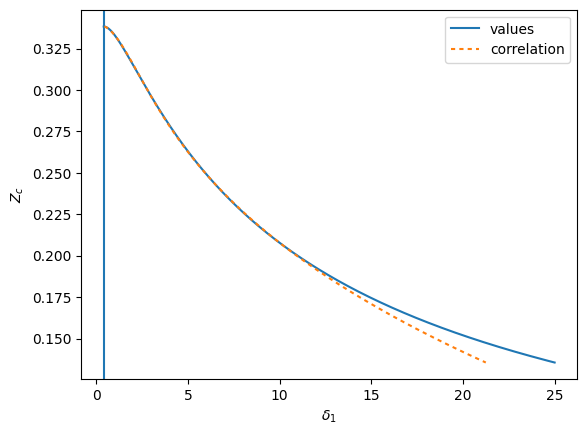

RK-PR¶
The EOS can be given as
\[\alpha^{\rm r} = \psi^{(-)} - \dfrac{a_m}{RT } \psi^{(+)}\]
\[\psi^{(-)} =-\ln(1-b_m\rho )\]
\[\psi^{(+)} = \dfrac{\ln\left(\dfrac{\Delta_1 b_m\rho+1}{\Delta_2b_m\rho+1}\right)}{b_m(\Delta_1-\Delta_2)}\]
with the EOS fixed constants of
\[\Delta_1 = \sum_i x_i \delta_{1,i}\]
\[\Delta_2 = \frac{1-\Delta_1}{1+\Delta_1}\]
The attractive term goes like
\[a_{i} = a_{c,i}\left(\frac{2}{3+T/T_{c,i}}\right)^{k_i}\]
with quadratic mixing rules
\[a_m = \sum_i\sum_jx_ix_j(1-k_{ij})\sqrt{a_{i}(T)a_{j}(T)}\]
And the covolume also gets quadratic mixing rules
\[b_m = \sum_i\sum_jx_ix_j(1-l_{ij})(b_{i}+b_{j})/2\]
Thus, to implement the RK-PR model in predictive mode, the following steps are required:
Obtain the critical parameters Tc, pc
Solve for delta_1 from the experimental critical compressibility factor, begin with the values from the correlation
Solve for k by fixing the pressure at the T=0.7Tc. In the case (e.g, CO:math:`_2`) that Tt < 0.7Tc, use instead Tr=Tt/Tc
It may be necessary to adjust the values of \(\delta_{1,i}\) and \(k_i\) for an individual component to better match the behavior of more polar components.
[1]:
import numpy as np
import scipy.optimize
import matplotlib.pyplot as plt
import teqp, numpy as np
import CoolProp.CoolProp as CP
import pandas
def delta1_correlation(Zc):
# Eq. B.4 of Cismondi FPE 2005
d1 = 0.428363
d2 = 18.496215
d3 = 0.338426
d4 = 0.660000
d5 = 789.723105
d6 = 2.512392
return d1 + d2*(d3-Zc)**d4 + d5*(d3-Zc)**d6
def Zc_delta1(delta1):
# Eqs. B.1 to B.3 of Cismondi FPE 2005
d1 = (1+delta1**2)/(1+delta1)
y = 1 + (2*(1+delta1))**(1/3) + (4/(1+delta1))**(1/3)
return y/(3*y + d1 - 1)
DELTA1 = np.linspace(np.sqrt(2)-1, 25, 1000)
ZZ = Zc_delta1(DELTA1)
plt.plot(DELTA1, ZZ, label='values')
DELTA1back = delta1_correlation(ZZ)
plt.axvline(np.sqrt(2)-1)
plt.plot(DELTA1back, ZZ, dashes=[2,2], label='correlation')
plt.gca().set(ylabel='$Z_c$', xlabel='$\delta_1$')
plt.legend(loc='best')
plt.show()
# for Zc in np.linspace(0.2, 0.3383, 1000):
# resid = lambda x: Zc_delta1(x)-Zc
# # print(resid(delta1_correlation(Zc)))
# print(Zc, scipy.optimize.newton(resid, delta1_correlation(Zc)), delta1_correlation(Zc))

[2]:
names = ['CO2', 'n-Decane']
R = 8.31446261815324
Tc = np.array([CP.PropsSI(k,"Tcrit") for k in names])
pc = np.array([CP.PropsSI(k,"pcrit") for k in names])
rhoc = np.array([CP.PropsSI(k,"rhomolar_critical") for k in names])
Zcexp = pc/(rhoc*R*Tc)
# Use a rescaled Zc to obtain delta_1
Zc = 1.168*Zcexp
delta_1 = [scipy.optimize.newton(lambda x: Zc_delta1(x)-Zc_, delta1_correlation(Zc_)) for Zc_ in Zc]
def solve_for_k(i, p_target, Tr):
"""
The value of k for the i-th component is based on getting
the right vapor pressure, so a rootfinding routing is
used to obtain these values
"""
def objective(k):
j = {
"kind": "RKPRCismondi2005",
"model": {
"delta_1": [delta_1[i]],
"Tcrit / K": [Tc[i]],
"pcrit / Pa": [pc[i]],
"k": [k],
"kmat": [[0.0]],
"lmat": [[0.0]],
}
}
model = teqp.make_model(j)
T = Tr*Tc[i]
z = np.array([1.0])
a, b = model.get_ab(T, z)
anc = teqp.build_ancillaries(model, Tc[i], rhoc[i], 150)
rhoL, rhoV = model.pure_VLE_T(T, anc.rhoL(T), anc.rhoV(T), 10)
p = T*R*rhoL*(1+model.get_Ar01(T, rhoL, z))
return p-p_target
return scipy.optimize.newton(objective, 2.1)
Tr = 0.7
i = 1
k_C10 = solve_for_k(i, CP.PropsSI('P','T',Tr*Tc[i],'Q',0,names[i]), Tr)
model = teqp.make_model({
"kind": "RKPRCismondi2005",
"model": {
"delta_1": delta_1,
"Tcrit / K": Tc.tolist(),
"pcrit / Pa": pc.tolist(),
"k": [2.23854, k_C10],
"kmat": [[0,0],[0,0]],
"lmat": [[0,0],[0,0]],
}
})
# Start at both pures
for ipure in [0, 1]:
Tc, rhoc = model.solve_pure_critical(300, 5000, {"alternative_pure_index":ipure, "alternative_length": 2})
z = np.array([0.0, 0.0]); z[ipure] = 1.0
pc = Tc*R*rhoc*(1+model.get_Ar01(Tc, rhoc, z))
plt.plot(Tc, pc/1e5, 'o')
opt = teqp.TCABOptions(); opt.polish=True; opt.verbosity=100; opt.integration_order=5; opt.rel_err=1e-10; opt.abs_err=1e-10
trace = model.trace_critical_arclength_binary(Tc, z*rhoc, options=opt)
df = pandas.DataFrame(trace)
plt.plot(df['T / K'], df['p / Pa']/1e5)
# Overlay the data from Reamer and Sage, Cismondi additional data points not present in Reamer and Sage
Tc_K = [310.928, 344.261, 377.594, 410.928, 444.261, 477.594, 510.928]
pc_kPa = np.array([7997.92, 12824.25, 16492.26, 18560.69, 18836.48, 17836.74, 15333.94])
plt.plot(Tc_K, pc_kPa/1e2, 'o')
plt.gca().set(xlabel='$T$ / K', ylabel='$p$ / bar');
---------------------------------------------------------------------------
ValueError Traceback (most recent call last)
Cell In[2], line 46
44 Tr = 0.7
45 i = 1
---> 46 k_C10 = solve_for_k(i, CP.PropsSI('P','T',Tr*Tc[i],'Q',0,names[i]), Tr)
48 model = teqp.make_model({
49 "kind": "RKPRCismondi2005",
50 "model": {
(...)
57 }
58 })
60 # Start at both pures
Cell In[2], line 42, in solve_for_k(i, p_target, Tr)
39 p = T*R*rhoL*(1+model.get_Ar01(T, rhoL, z))
41 return p-p_target
---> 42 return scipy.optimize.newton(objective, 2.1)
File /opt/conda/lib/python3.11/site-packages/scipy/optimize/_zeros_py.py:349, in newton(func, x0, fprime, args, tol, maxiter, fprime2, x1, rtol, full_output, disp)
347 p1 = x0 * (1 + eps)
348 p1 += (eps if p1 >= 0 else -eps)
--> 349 q0 = func(p0, *args)
350 funcalls += 1
351 q1 = func(p1, *args)
Cell In[2], line 32, in solve_for_k.<locals>.objective(k)
20 def objective(k):
21 j = {
22 "kind": "RKPRCismondi2005",
23 "model": {
(...)
30 }
31 }
---> 32 model = teqp.make_model(j)
33 T = Tr*Tc[i]
34 z = np.array([1.0])
File /opt/conda/lib/python3.11/site-packages/teqp/__init__.py:47, in make_model(*args, **kwargs)
42 def make_model(*args, **kwargs):
43 """
44 This function is in two parts; first the make_model function (renamed to _make_model in the Python interface)
45 is used to make the model and then the model-specific methods are attached to the instance
46 """
---> 47 AS = _make_model(*args, **kwargs)
48 attach_model_specific_methods(AS)
49 return AS
ValueError: Don't understand "kind" of: RKPRCismondi2005